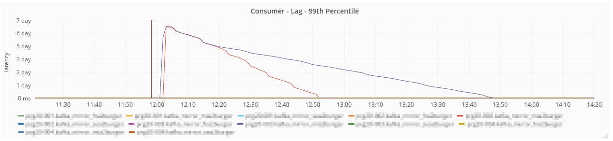

Přání býti kafkou
Když se jeden Linux admin a jeden backend vývojář rozhodnou vyzkoumat příčinu problému, který je pravidelně otravuje při restartech distribuované cloudové služby, můžou se postupně ponořit opravdu hluboko...
Tento příběh začal, jako většina podobných investigací, příchozími alerty o chybách na produkci. Pravidelně spouštěné integrační testy začaly po aktualizaci a plánovaném restartu jednoho z nodů Apache Kafka clusteru hlásit duplikace v konzumovaných zprávách.
Nejsme banka, a tudíž v naší konfiguraci může taková situace občas (zřídka) nastat, nicméně všechno má své meze. Pokud není množství chyb v poměru k celkovému počtu událostí statisticky významné, není třeba nic řešit. Ale je velký rozdíl mezi desítkami až stovkami duplicit denně nebo tisíci za vteřinu po dobu několika hodin. Byl to zkrátka takový ošklivý... nepěkná věc, která se už neututlá a raději se s ní jde rovnou ven, protože by si jí stějně někdo brzy všimnul.
Začátek všech alertů celkem jasně korespondoval s aktualizací první instance Kafky a následným restartem. Naše dosavadní zkušenosti s rolling restarty Kafky říkají, že se jedná spíše o křehkou operaci, při které se dost často něco po... pokazí a pokaždé nějak úplně jinak. Kreativita distribuovaných systémů dokáže vždy překvapit. Pokud máte s graceful restarty Kafky jiné, lepší zkušenosti, čtěte dál, právě o tom je tento článek. My už je snad budeme mít v budoucnu také - zkrátka chyba byla u nás a Kafka za nic nemohla.
Během zpětné analýzy si osvěžíme principy operačních systémů, setkáme se s tucty známých i méně známých termínů, objevíme naprosto nečekané rozdíly v distribucích založených na RedHatu a Debianu a také se mimo jiné zanoříme do zdrojových kódů jistého unixového nástroje, který lidstvo denně používá už desítky let. Text se může zdát místy trochu složitější, ale nenechte se odradit, čtení až do konce bude určitě stát za to.
Aby čtenář pochopil, jak vysoko se na aplikačním stacku běžně pohybujeme a jak hluboko do operačního systému jsme se přes všechny vrstvy se svými analýzami následně dostali, je třeba nejdříve nastínit, jak vypadá architektura celého řešení.
Z výšky jednoho kilometru
Námi vyvinutý systém pro big data analýzy (v každodenních špičkách řádově 100k událostí/s, nekomprimovaných 100 MB/s) používá na příjmové straně dvě vrstvy oddělených Kafka clusterů. První skupina backendů toho času běží ve čtyřech nezávislých datacentrech rozmístěných různě po světě. Je to kvůli tomu, aby byly co nejblíže aplikacím u uživatelů, které produkují události, a zároveň aby dokázaly překlenout nejrůznější síťové nedostupnosti a nespolehlivosti Internetu.
Do Kafka clusterů proudí vstupní data výhradně skrz aplikaci Receiver, jedná se v podstatě o REST-like proxy obsahující Kafka producent klienta a nepříliš složitou logiku. Ve chvíli, kdy Kafka potvrdí příjem události, máme v případě možných problémů teoreticky až několik dnů na opravu, znovuvyčtení a zpracování uložených dat. Taková situace by rozhodně nebyla příjemná a určitě bychom se zapotili, nicméně by nemělo dojít k žádné ztrátě událostí. Receiver a Kafka jsou tedy základem stability celého systému a musí vždy spolehlivě běžet.
Události z Kafky vyčítají Input Filtry, jejichž úkolem je konverze starších formátů na nový, čištění dat, opravy chyb způsobených bugy v historických verzích klientů, obohacení událostí o GeoIP lokace a podobně. Data se zapisují zpět do té samé DC Kafky, ale do topiků s jinými jmény.
Vyčištěné události se z DC Kafka clusterů mirrorují pomocí standartního Mirror maker toolu do tzv. master Kafky, odkud je dále vyčítají finální konzumenti do Hadoopu/HDFS, vybrané topiky tečou do Elasticsearche, malá frakce se sampluje na stage a dev prostředí, popř. nad streamem běží nejrůznější realtime analýzy. Kafka otevírá spoustu možností.
Každá z aplikací běží replikovaně v několika instancích. Pro rychlou představu: Receiverů a Input Filtrů je 11, Kafka brokerů celkem 14, v rámci každého Kafka clusteru musí samozřejmě běžet i cluster ZooKeeperů. Data z každého datacentra kopíruje 5 instancí Mirror makerů. Všichni konzument klienti se dále replikují nejen na úrovni instancí a strojů, ale, aby se zvýšil paralelismus, i pomocí konfigurovatelného počtu aplikačních vláken. Objem zpracovávaných dat s připojováním a rozšiřováním jednotlivých aplikací v čase neustále narůstá. Základním požadavkem je možnost snadného škálování na všech úrovních, jinak by systém už dávno nebyl udržitelný.
A v této změti distribuovaných aplikací, jejich jednotlivých instancí, strojů, aplikačních vláken, grafů a logů je třeba najít příčinu jisté zřídka se vyskytující chyby...
Apache Kafka
Apache Kafka je platforma pro streamování dat. Sestává z distribuované serverové služby a dvojice klientských knihoven umožňujících produkci a konzumaci událostí. Veškeré záznamy drží na pevných discích typicky po dobu jednotek dní a zároveň je replikuje do několika instancí pro případ selhání některé z nich. Horizontálně škáluje.
Ačkoli data ukládá na disk, rozhodně není pomalá. Sekvenční čtení/zápis většího množství bufferovaných dat z/na disk je rychlostně srovnatelný s přístupem do paměti. Kafka dále využívá různé triky jako například přímé kopírování z disku na síťovou kartu v kernel space. Tím se obchází zbytečné kopírování bufferů do user space a zpět. Autor článku už několikrát ve čtyř-nodovém clusteru pozoroval datové přenosy stovek MB/s, resp. vyšších stovek tisíc zpráv/s. Limitním faktorem bývá spíše rychlost síťových propojů než disků nebo aplikačního kódu.
V nejjednodušší formě se Kafka používá k oddělení aplikací produkujících události od aplikací, které je zpracovávají. Producenti a konzumenti jsou naprosto nezávislé systémy a mají plně oddělený životní cyklus, spojuje je pouze formát přenášených zpráv.
Kafka bývá často srovnávána s messaging systémy typu RabbitMQ. Narozdíl od nich garantuje pořadí doručení událostí - v jádru své architektury obsahuje datovou strukturu log. Díky tomuto napohled malému rozdílu může být jednou z jejích dalších aplikací i primární databáze systému, kdy tradiční databáze a úložiště (relační SQL databáze, Hadoop, Elasticsearch, Cassandra, Redis, atd.) mají pouze formu materialized view a dají se kdykoli přepočítat.
Duplicity, duplicity, duplicity
Integrační testy, o nichž byla v úvodu řeč, simulují chování reálných klientů na obou stranách pipeline. Generují a zapisují události do Receiverů v jednotlivých datacentrech, následně je vyčítají z master Kafky a porovnávají přijatá data s očekávanými transformacemi. Každá z testovacích zpráv obsahuje unikátní UUID.randomUUID() pro párování vstupu a výstupu, bez toho by nemohly fungovat. Integrační testy si ale také ukládají množinu již přijatých UUID. Pokud se některé z nich na výstupu systému objeví více než jednou, je to jasná známka duplikace.
Jelikož počátek duplikací časově korespondoval s restartem prvního Kafka brokeru ve frankfurtském datacentru, dá se předpokládat, že je na vině tato DC Kafka nebo některý ze systémů, který s ní přímo komunikuje, tj. Receiver (producent), Input Filtry (konzument, producent), ostatní Kafka brokeři ve frankfurtu (repliky) nebo Mirror maker (konzument).
Jako viník byl nakonec podle grafů odhalen Mirror maker, kterému se v daném čase skokově zvýšil počet zkonzumovaných zpráv. V globálním pohledu to není tak zřejmé, ale při zaostření pouze na Frankfurkt bylo vše ihned jasné. Po restartu se datový přenos vrátil zpět na původní hodnoty a integrační testy znovu samým štěstím zezelenaly.

Poznámka na okraj pro úplnost článku: Chybu v Mirror makeru a potažmo v libovolném Kafka konzumentu jsme nedokázali vystopovat. Na základě logů jsme měli několik teorií, ale všechny jsme bohužel dokázali celkem snadno vyvrátit. Bug report do Kafky tedy nemělo cenu vytvářet, protože jsme neměli žádné vodítko, kterým směrem obrátit pozornost Kafka vývojářů. Ti jsou mimochodem velice aktivní a odpovídají prakticky okamžitě, už jsme pár chyb v minulosti hlásili.
Zabíjíme Kafku
Proč jsou restarty Kafky vždycky křehké jako napůl vysušený hrad z písku? A proč to nikdo jiný než my neřeší? Tohle přece musí vadit každému, ale nikde není k nalezení žádný ticket, žádný článek, žádný blog post, nic.
(Chvíle ticha...)
A co když se problém vyskytuje jenom u nás, na našich serverech? Při vývoji Kafku spouštíme v Dockeru na pracovních noteboocích a typicky bývá všechno v pořádku. Nicméně je pravda, že v tomto případě jí protékají oproti třiceti tisícům zpráv za sekundu pouze malé desítky. Může být rozdíl způsobený výrazně vyšším zatížením? Pojďme to už jednou provždy vyřešit!
Pozorované symptomy:
- Kafka po restartu vždy přepočítává spousty koruptovaných indexů. Tato operace občas trvá i několik hodin a opravdu bolí. Jeden rolling restart celého clusteru trvá běžně celý den. Update na novou verzi potřebuje v obecném případě dva restarty a clusterů máme několik. Zkrátka obrovské auuu.
- Pokud se Kafka po zastavení ihned spustí, ZooKeeper ji odmítne, protože si myslí, že stále běží. Broker ID je v něm stále registrované a je třeba chvíli počkat na timeout. Do init skriptu vkládáme při restartu mezi start a stop oprace umělý sleep.
- Producentům se v okamžiku restartu nedaří zapisovat do partition, jejichž leader je při rebalancingu migrován na ostatní brokery z ISR (In Sync Replicas). Callback v klientu obdrží místo úspěšného potvrzení výjimku, nakonfigurovaný jeden retry nestačí.
- Na producentech používáme
acks = 1, tj. při odesílání dat stačí potvrzení od leadera, aby se považovala za bezpečně uložená. Ve chvíli, kdy leader přestane být dostupný, se tudíž ztrácí zprávy, které se ještě nestihly odeslat replikám. Řádově se jedná o malé desítky až stovky zpráv. - Konzumenti se občas škaredě zblázní. A když píšu škaredě, myslím tím opravdu škaredě. Výše byl popsán problém s duplikacemi, ale už jsme u několika mála partition a skupin konzumentů viděli i ztrátu offsetů, což by nemělo nikdy, ale opravdu nikdy nastat. Podle logů byla tato ztráta pravděpodobně způsobená chvilkovou nedostupností dat, kdy Kafka nejspíše klientovi odpověděla aniž by byla plně inicializovaná. Nevalidní offset při požadavku na data spolu s nevhodnou konfigurací
auto.offset.reset = earliestzpůsobil skok na začátek logu a následnou bolestivou rekonzumaci všech dat, tj. posledních několika dnů. Od jisté doby už nepoužívámeearliest, alelatests všudypřítomným komentářem, že je lepší přeskočit a ztratit pár minut, než zbytečně všechno vyčítat, znovuzpracovávat a řešit, že všechna data máme v HDFS a dalších systémech dvakrát. Samozřejmě záleží na službě a očekáváních.

Vypadá to, jako bychom Kafku neukončovali korektně. V hlavě se nám objevuje termín SIGKILL, ale kdo by ho posílal a proč?
Ukončujeme Kafku
Nyní jsou ve hře dvě varianty, buď máme Kafku špatně nakonfigurovanou nebo ji ukončujeme špatně. Dokumentace o plánovaných restartech hovoří jasně:
- Vypínaný server synchronizuje všechny logy na disk, aby zamezil potřebě jakýchkoli oprav. Případné opravy trvají dlouho a pokud nejsou nutné, úmyslné restarty budou rychlejší.
- Vypínaný server migruje všechny partition, u kterých je veden jako leader, na ostatní repliky. Toto minimalizuje čas, kdy je partition nedostupná na několik milisekund.
Zavření všech otevřených souborů a jejich synchronizace na disk by měla být aktivní vždy nezávisle na konfiguraci, migrace leaderů, pouze pokud se v konfiguraci nachází controlled.shutdown.enable = true. V konfiguračním souboru tuto volbu máme uvedenou, takže problém by měl být někde jinde.
Jak správně ukončit Kafku? Skript kafka-server-stop.sh z distribuce Kafky používá signál SIGTERM.
#!/bin/sh
# ...
PIDS=$(ps ax | grep -i 'kafka\.Kafka' | grep java | grep -v grep | awk '{print $1}')
# ...
kill -s TERM $PIDS
Jako init daemon používáme Upstart. Direktivu kill signal sice v konfiguraci explicitně uvedenou nemáme, nicméně výchozí hodnotou je předpokládaný SIGTERM. Pokud by se ale proces nestihl ukončit, Upstart by ho po pětisekundovém timeoutu zabil signálem SIGKILL. Ha! Pět sekund je opravdu hodně málo a toto by mohla být příčina všech našich problémů. Konfigurace však explicitně uvádí kill timeout 300, což není žádných 5 sekund ale 5 minut. Autor konstanty zde byl opravdu štědrý a chtěl mít jistotu, že Kafka bude mít dost času - lepší si chvíli počkat.
exec /bin/su -s /bin/sh - kafka -c '/opt/kafka/bin/kafka-server-start.sh /opt/kafka/config/server.properties' # wait on stop (to fix restart) for two reasons # 1) avoid jmx/rmi 'port already in use' # 2) wait for the session to expire in ZK to avoid start-up fail post-stop exec sleep 11 respawn respawn limit 3 30 # http://upstart.ubuntu.com/wiki/Stanzas # time to wait between sending TERM and KILL signals kill timeout 300 start on stopped rc RUNLEVEL=[2345] stop on runlevel [S016]
Na všech úrovních bychom tedy měli mít všechno nastaveno správně. Kde by jenom mohla být chyba? Na světě není nic dokonalé, dokonce ani software, nějaký bug někde? Ale kde?
Než budete číst dál, zkuste se zamyslet. Představte si, že jste se dostali k poslední stránce napínavé detektivky. Víte, že už máte všechny potřebné informace a logickou úvahou máte dojít k tomu, kdo je vrah. Kdo je tedy vrah? Kdo bez jakýchkoli rozpaků brutálně zabíjí Kafku signálem SIGKILL?
Unix a procesy
V operačních systémech založených na Unixu se programy spouštějí pomocí kernelových volání fork() a exec().
Úkolem fork() je naklonovat současný proces do nového. Ten bude až na jedno číslo identický, jedná se o návratovou hodnotu funkce fork(). Rodičovský proces v ní obdrží identifikátor potomka a potomek nulu. Procesy se tak dozví, kým jsou, a v kódu se mohou dále rozhodnout, jaké operace budou vykonávat.
Volání exec() umožňuje nahradit současný kontext procesu něčím jiným. Z kopie předchozího procesu se tak stane úplně jiná aplikace.
// gcc -Wall -o forkexec forkexec.c // ./forkexec #include <stdio.h> #include <unistd.h> #include <sys/wait.h> int main(int argc, char* argv[]) { pid_t pid = fork(); if (pid == -1) { fprintf(stderr, "Fork failed\n"); return 1; } else if (pid == 0) { printf("Child: pid %d\n", getpid()); execl("/bin/echo", "/bin/echo", "Child: Hello, world!", NULL); return 42; // Never executed } else { printf("Parent: pid %d, child %d\n", getpid(), pid); int status; waitpid(pid, &status, 0); printf("Parent: child exited %d\n", status); return 0; } }
./forkexec Parent: pid 9574, child 9575 Child: pid 9575 Child: Hello, world! Parent: child exited 0
Procesy se v systému označují unikátním identifikátorem PID (Process ID). Platné hodnoty začínají číslem 1 a končí konstantou definovanou v /proc/sys/kernel/pid_max, která má typicky hodnotu 32768 popř. 4194303. Procesy se organizují do stromové struktury, prvním spuštěným je tzv. init s PID 1 (System V init, Upstart, SystemD a další) a má speciální povinnosti.
Volání fork() a exec() se nemusí používat pouze společně. Pokud by se zavolal pouze exec(), nedošlo by k naklonování procesu a spuštěná aplikace by se pouze nahradila nějakou jinou. Přesně toho chceme dosáhnout při spouštění Kafky.
V případě samostatného volání fork() by se v potomku nenahradil současný kontext za jiný a v systému by defakto běžely dvě kopie původního procesu. Toho se využívá například ve webových serverech, kdy rodičovský proces vytváří skupinu tzv. worker procesů, kterým přeposílá práci.
su kafka
Kdo je tedy vrah? Ano, správně. Je to někdo, kdo téměř ani nebyl zmíněn, téměř neviditelný pomocník /bin/su. Tento užitečný prográmek je asi nejznámější soubor s nastaveným sticky bitem a bývá často skloňován v knihách o bezpečnosti v unixových prostředích. V našem případě se /bin/su nepoužívá k typickému zvyšování práv na roota, např. kvůli instalaci nového softwaru, ale přesně naopak, tedy ke snížení práv spouštěného procesu, aby Kafka neběžela pod rootem. Pojďme zkusit najít v /bin/su odpověď na naši otázku.
Anketa: Opravdu zabíjí /bin/su proces potomka signálem SIGKILL?
- Ano.
- Ne.
- Jiné.
- Nevím.
Správnou odpověď naleznete dále v textu a - ať už jste hlasovali jakkoli - nejspíš vás překvapí...
Do hlubin /bin/su
Zkusme si v rychlosti analyzovat chování /bin/su a skriptů, které startují Kafku. /bin/su podle dokumentace nejdříve spouští shell a až ten následně aplikaci. Místo Kafky pro jednoduchost použijeme příkaz sleep, který čeká daný počet sekund a pak se sám ukončí. V prvním terminálu pod rootem spustíme příkaz obdobný Upstart konfiguraci, přepínáme se na uživatele nobody. Příkaz exec se před sleep nachází úmyslně, JVM se při startu Kafky spouští úplně stejně (viz kód skriptů kafka-server-start.sh a kafka-run-class.sh).
# Become root su - # Lower privileges and execute something exec /bin/su -s /bin/sh - nobody -c 'exec /bin/sleep 60'
V druhém terminálu se podíváme na strom procesů. Oba příkazy /bin/su se podle očekávání zachovaly, exec nahradil pouze proces shellu. Tímto pokusem jsme zjistili, že Upstart posílá ukončovací signály /bin/su a ne JVM, ve kterém běží Kafka, protože vidí a spravuje pouze přímé potomky. Našli jsme první, méně významný, bug. Je jisté, že /bin/su nikdy nepřepošle SIGKILL, který není mapovatelný, a Kafka může při ukončování zůstat "viset" nedefinovaně dlouho.
pstree | less
# After first su
init-+
|-xterm---bash---su---bash
# After second su
init-+
|-xterm---bash---su---su---sleep
Pokus číslo dva a strace. Jaká volání systému vykoná /bin/su po příchozím SIGTERMu?
strace /bin/su -s /bin/sh - nobody -c 'exec /bin/sleep 60' 2> strace_su.log kill -s TERM 11827
V logu hledáme klíčová slova kill, SIGTERM a SIGKILL, které nás nejvíce zajímají. /bin/su nejdříve pošle potomkovi SIGTERM, poté počká 2 sekundy a aby mělo jistotu, zabije ho ještě pomocí SIGKILL. V rukách konečně máme jednoznačný důkaz, že /bin/su posílá i SIGKILL. Koruptované indexy se všemi dalšími potížemi jsou konečně vysvětleny! Nicméně se objevila další důležitá otázka: Kde se vzaly ty dvě sekundy? Tohle nemá Kafka šanci stihnout.
...
--- SIGTERM {si_signo=SIGTERM, si_code=SI_USER, si_pid=10805, si_uid=0} ---
rt_sigreturn() = -1 EINTR (Interrupted system call)
write(2, "\nSession terminated, killing she"..., 37
Session terminated, killing shell...) = 37
kill(11828, SIGTERM) = 0
...
rt_sigprocmask(SIG_BLOCK, [CHLD], ~[INT QUIT KILL ALRM TERM STOP RTMIN RT_1], 8) = 0
nanosleep({2, 0}, 0x7ffc0c569e40) = 0
kill(11828, SIGKILL) = 0
write(2, " ...killed.\n", 12 ...killed.
) = 12
rt_sigaction(SIGTERM, {SIG_DFL, [], SA_RESTORER, 0x7f4d60a62660}, NULL, 8) = 0
kill(11827, SIGTERM) = 0
--- SIGTERM {si_signo=SIGTERM, si_code=SI_USER, si_pid=11827, si_uid=0} ---
+++ killed by SIGTERM +++
Pojďme se tedy ponořit ještě o trochu níž.
Zdrojové kódy /bin/su
Najít zdrojové kódy /bin/su není úplně jednoduché, ale jde to zvládnout. Na našich serverech s Kafkou toho času běží stařičký CentOS 6.
rpm -qf /bin/su coreutils-8.4-43.el6.x86_64
Po vyhledání balíčku a konkrétní verze dorazíme na rpmfind.net, což sice není autoritativní zdroj, ale pro naše účely postačí. Na stránce je zároveň uveden odkaz na zdrojový balíček, ve kterém by se měly nacházet zdrojové kódy. Stáhneme ho a rozbalíme. Po chvíli hledání objevíme soubor coreutils-pam.patch a kód, který odpovídá výstupu strace.
+ if (caught) {
+ fprintf(stderr, "\nSession terminated, killing shell...");
+ kill (child, SIGTERM);
+ }
+ /* Not checking retval on this because we need to call close session */
+ pam_setcred(pamh, PAM_DELETE_CRED | PAM_SILENT);
+ retval = pam_close_session(pamh, 0);
+ PAM_BAIL_P_VOID;
+ retval = pam_end(pamh, PAM_SUCCESS);
+ PAM_BAIL_P_VOID;
+ if (caught) {
+ sleep(2);
+ kill(child, SIGKILL);
+ fprintf(stderr, " ...killed.\n");
+ exit(-1);
+ }
Pravděpodobně se jedná o backport nějaké důležité funkcionality z upstreamu do starší verze, autorem patche je pravděpodobně někdo z RedHatu.
Výše uvedený rpmfind.net uvádí jako zdroj gnu.org/coreutils, nicméně projekt nebo jeho část se někdy v minulosti přesunul na kernel.org/util-linux. S git annotate se dá v dávné historii dohledat původní zdrojový commit, bohužel jeho popis neobsahuje moc relevantních informací. Pro zájemce uvádím i odkaz na zdrojový kód nejnovější verze /bin/su.
commit 8171142ab66e94a409224547b33381259a0c3f72
Author: Ludwig Nussel <ludwig.nussel@suse.de>
Date: Tue Aug 17 13:21:44 2010 +0200
pam support for su
Tento bug (nebo možná pouze feature) jsme samozřejmě poctivě nahlásili a dokonce i opravili. Po diskuzi s vývojáři (zdravíme Karla Žáka) to ale nevypadá, že by naše úprava byla někdy aplikována. Ačkoli změna oproti současnému stavu dává smysl, protože by se /bin/su chovalo konzistentněji, nemáme motivaci se ji pokusit protlačit.
Není su jako su
Nyní v článku trochu odbočíme a budeme se věnovat jednomu překvapivému zjištění. Pokud byste si zkusili výše uvedené příklady na Debianu, budou se chovat odlišně. Výstup strace od pohledu vypadá úplně jinak a hlavně neobsahuje žádný SIGKILL.
...
--- SIGTERM {si_signo=SIGTERM, si_code=SI_USER, si_pid=30289, si_uid=0} ---
rt_sigreturn() = -1 EINTR (Interrupted system call)
write(2, "\n", 1
) = 1
open("/usr/share/locale/locale.alias", O_RDONLY|O_CLOEXEC) = 7
fstat(7, {st_mode=S_IFREG|0644, st_size=2492, ...}) = 0
mmap(NULL, 4096, PROT_READ|PROT_WRITE, MAP_PRIVATE|MAP_ANONYMOUS, -1, 0) = 0x7f5f5e7dc000
read(7, "# Locale name alias data base.\n#"..., 4096) = 2492
read(7, "", 4096) = 0
close(7) = 0
munmap(0x7f5f5e7dc000, 4096) = 0
open("/usr/share/locale/en_US/LC_MESSAGES/shadow.mo", O_RDONLY) = -1 ENOENT (No such file or directory)
open("/usr/share/locale/en/LC_MESSAGES/shadow.mo", O_RDONLY) = -1 ENOENT (No such file or directory)
write(2, "Session terminated, terminating "..., 40Session terminated, terminating shell...) = 40
kill(4294936960, SIGTERM) = 0
rt_sigaction(SIGALRM, {0x55b0bac7ef90, [ALRM], SA_RESTORER|SA_RESTART, 0x7f5f5de3d0e0}, {SIG_DFL, [], SA_RESTORER, 0x7f5f5de3d0e0}, 8) = 0
rt_sigaction(SIGCHLD, {0x55b0bac7ef30, [CHLD], SA_RESTORER|SA_RESTART, 0x7f5f5de3d0e0}, {SIG_DFL, [], 0}, 8) = 0
alarm(2) = 0
rt_sigprocmask(SIG_BLOCK, [ALRM], NULL, 8) = 0
wait4(30336, [{WIFSIGNALED(s) && WTERMSIG(s) == SIGTERM}], WNOHANG, NULL) = 30336
rt_sigprocmask(SIG_UNBLOCK, [ALRM], NULL, 8) = 0
write(2, " ...terminated.\n", 16 ...terminated.
) = 16
...
exit_group(143) = ?
+++ exited with 143 +++
Může za to stáří systému? CentOS 6 je výrazně starší než taktéž hodně starý Debian Jessie a také jsme si ověřili, že se SIGKILL nachází i v master branchi /bin/su. Dokonce jsme udělali opravu, která tuto funkcionalitu odstraňuje. Nebo že by se jednalo o nějaký distribuční patch, který by opravoval právě tuto chybu? Možné je všechno. Opověď opět určitě nalezneme ve zdrojových kódech.
dpkg -S /bin/su login: /bin/su
Balíček má jiné jméno (login) a zdrojový balíček je také jiný (shadow). Chyba v matrixu? Proč taková výrazná změna? Tentokrát nebudeme napínat, /bin/su na Debianu je úplně jiná aplikace než /bin/su na CentOSu!
Vstřebali jste tu informaci? Dobře, tak zavřete pusu. Debianí projekt sídlí na pkg-shadow.alioth.debian.org a moc toho o sobě neříká. Vývojáři Debianu se možná rozhodli pro vlastní implementaci tohoto důležitého subsystému, aby ho měli plně pod kontrolou. Ale to jenom hádáme.
Jak jsme na něco takového přišli? Poté, co kolega objevil příčinu problému v /bin/su, zkusil jsem při psaní retrospektivy najít poslaný kousek kódu v upstream zdrojových kódech. A protože mám u sebe na počítači Debian, hledal jsem jiným směrem a došel do jiného cíle. Jedním slovem náhoda.
Jak z toho ven?
Vraťme se zpět k našemu problému a především k možnostem jeho řešení. Je jasné, že patchovat a provozovat vlastní verzi /bin/su není něco, do čeho by se komukoli chtělo. Nicméně použití tohoto nástroje byla čistě naše volba a nikdo nás do něho nenutí.
su, sudo
Co je vlastně v této situaci hlavním nedostatkem /bin/su? Především to, že s ním vzniká hned několik podprocesů a že Upstart operuje s PID předka místo potomka. Nejdříve se spouští /bin/su, /bin/su spouští shell a shell spouští požadovaný příkaz. Při ukončování procesu Upstart posílá SIGTERM /bin/su a ne Kafce. Tato sekvence několika fork-exec operací je výrazně složitější, než by mohla být. Místo ní by úplně stačilo přepnout efektivní UID z roota na neprivilegovaného uživatele a následně zavolat exec, který by přepsal současný obsah procesu spouštěnou aplikací. Jednoho by mohl napadnout alternativní příkaz sudo, ten se však chová obdobně a výsledná situace by byla naprosto stejná. Ani jeden z nich se pro tento use case naprosto nehodí, nebyly na něj navrženy, a je tedy zbytečné je dále uvažovat.
Upstart
Úplně nejjednodušší by bylo pomocí direktivy setuid <username> požádat Upstart, aby špinavou práci s přepínáním uživatele odvedl sám a nás tím vůbec nezatěžoval. Bohužel tato možnost je dostupná až od verze 1.4, kdežto v CentOSu 6 se nachází pouze výrazně starší 0.6.5. Aktualizace kvůli podobné maličkosti tak zůstává pouze v říši fantazie.
Dokumentace Upstartu popisuje, jak správně spustit úlohu pod jiným uživatelem. Jako jednu z doporučovaných možností uvádí utilitu start-stop-daemon dostupnou např. v Debianu a Ubuntu, která "jednoduše spustí daný příkaz poté, co změní UID/GID (exec bez forku)", což je přesně to, k čemu jsme oklikou došli sami. U su a sudo uvádí další dosud neuvažovanou nevýhodu a to, že skrze PAM zapisují záznamy o přihlašování uživatele do wtmp, což je při obyčejném spouštění aplikace spíše nežádoucí chování. Téměř na konci této sekce dokumentace je mezi příklady se su a sudo jakoby mimochodem zmíněna direktiva expect.
Popis expect je uveden rámečkem s varováním "extrémně důležitá direktiva: čtěte tuto sekci pozorně". Následuje několik odstavců o tom, jak se chovají různé typy aplikací. Některé neforkují vůbec, jiné forkují jednou a ještě jiné dvakrát a co z toho všeho plyne pro Upstart, který musí být schopen referencovat a spravovat správný process. Kdybychom si tuto část přečetli už kdysi, ušetřili bychom si všechny budoucí zážitky a problémy. S původní /bin/su variantou v konfiguračním souboru by bylo správné přidat dodatečný řádek expect fork, který by Upstartu oznámil, že má čekat právě jeden fork spouštěné aplikace. Tudíž by nespravoval /bin/su, ale Kafku/JVM. Tuto možnost jsme už ovšem nezkoušeli, protože jsme se rozhodli jít dříve naznačenou cestou.
Přepnutí uživatele
Vraťme se k Debianímu start-stop-daemon, který bohužel na CentOSu není dostupný, a jeho alternativám. Je překvapivé zjistit, že nejspíš neexistuje žádný univerzálně dostupný nástroj a že každá distribuce poskytuje ve výchozí instalaci něco jiného a nekompatibilního. Nástroje mají jiná jména, jiné parametry a jiné možnosti. Konfigurační soubor Upstartu by nebyl přenositelný mezi Linuxovými distribucemi (pokud pomineme fakt dostupnosti samotného Upstartu v distribucích). Samozřejmě všechno se dá nějakým způsobem doinstalovat, třeba i velice jednoduše, ale kdo by se o to chtěl starat. Tato situace se může porovnat například se su a sudo - dá se na ně spolehnout, že budou dostupné tak nějak vždycky a všude. Vzájemně nekompatibilních možností je mnoho:
start-stop-daemon- pouze Debian a jeho derivátydaemonutilita z/etc/init.d/functions- různě po webu doporučovaná CentOS alternativa kestart-stop-daemon- další
start-stop-daemon- přepis Debianího toolu z Perlu do C setpriv- součást util-linux, zmíněný v diskuzi u reportu o chybě v/bin/su, ale není ani v CentOSu ani v Debianu- gosu - používaný v kontejnerech a Docker světě
- Python:
import os ; os.setuid(...) ; os.exec*(...). Při použití pozor na reset prostředí! - A spousty dalších možností...
Aby jich nebylo málo, shodou okolností máme vlastní nástroj ff-runner, který byl před lety vytvořen ke standartizaci spouštění našich serverových aplikací. Jednou z jeho vlastností je mimo jiné přepnutí na požadovaného uživatele a exec procesu (bez forku), už ho máme na serverech, takže volba byla celkem jasná.
Závěrem
Nebylo to nijak jednoduché, ale chybu s problematickými restarty Kafky jsme nakonec úspěšně vyřešili. Při hledání jsme se ponořili z vícedatacentrového cloudu s několika distribuovanými aplikacemi o mnoha instancích na úroveň operačního systému, dokumentace Kafky, jejích startovacích skriptů, JVM, systémových init skriptů a dále až k teoretickému chování unixových procesů při jejich spouštění.
Jádro celého problému jsme nakonec odhalili až ve zdrojových kódech příkazu /bin/su, kam nás navedl strace výpis systémových volání. /bin/su obsahuje nedokumentovanou a velice nečekanou vlastnost, dvě sekundy od SIGTERM požadavku na ukončení posílá procesu potomka signál SIGKILL a tím mu bere jakoukoli šanci na korektní ukončení. Nicméně toto tvrzení neplatí ve všech Linuxových distribucích! Další překvapení přišlo ve chvíli, kdy jsme zjistili, že /bin/su na CentOSu a /bin/su na Debianu jsou dvě různé, naprosto nezávislé aplikace s různými zdrojovými kódy.
Dále explicitně podotýkáme, že ani při hledání chyby a ani při psaní článku nebyly prováděny žádné pokusy na kafkách či jiných zvířatech spojené s jejich případným týráním.